grill-me 使用指南：写代码前，先让 Claude Code 审问你的需求
大家好，我是小林。
之前写「SDD 规范」那篇，评论区有读者提到一个叫 grill-me 的 skill。
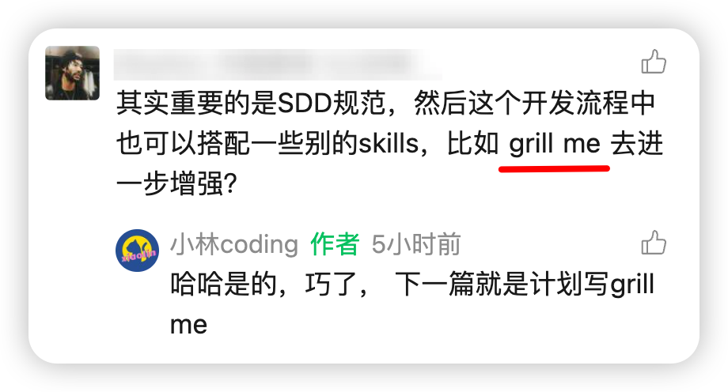
这个 skill 也是一个 vibe coding 神器，为什么这么说？
我们用 AI 编程，最难的往往不是写代码，而是一开始压根没把想法说清楚。你脑子里就一个模糊的念头，直接丢给 Claude Code，它二话不说就唰唰唰建文件、写代码、装依赖，进度条跑得飞快。
结果东西出来，你一看，傻眼了，根本不是你想要的。想改，一改牵一发动全身，最后干脆推倒重来。
问题出在哪？出在 AI 太听话了。
你给的需求本来就模糊，里面藏着几十个你自己都没想清楚的细节。AI 不会拦着你问，默认你都想好了，于是把这些空缺全替你猜了默认值，闷头就干。猜对一两个，猜错一大片，返工自然就来了。
而 grill-me 干的，就是反过来的事：它不急着动手，先揪着你一顿审问，把你没想明白的地方一个个逼出来。
grill 这词英文里就是「拷问、盘问」，名字起得相当直白。
一个只有三句话的 skill，凭什么让人上头？
先说说它是谁做的。grill-me 是海外一个叫 Matt Pocock 的开发者写的，放在他的 mattpocock/skills 仓库里，最近在圈子里挺火。
火的原因有点反常识：这玩意真正的核心，拢共就三小段大白话。
我把它的核心指令扒了出来，开头那段写着名字和用途的术语叫 frontmatter 先不管，正文就这么几句：
Interview me relentlessly about every aspect of this plan
until we reach a shared understanding. Walk down each branch
of the design tree, resolving dependencies between decisions
one-by-one. For each question, provide your recommended answer.
Ask the questions one at a time, waiting for feedback on each
question before continuing. Asking multiple questions at once
is bewildering.
If a question can be answered by exploring the codebase,
explore the codebase instead.
就这么点。说人话就是，它其实是在给 Claude 下三道命令。
- 第一句：给我往死里盘问这个方案的每一个细节，一直问到咱俩想的是同一件事为止。 顺着「设计树」一根一根枝丫往下走，每个决定都当场定死，再进下一个。而且每问一个问题，你得同时给出你推荐的答案。
- 第二句：一次只准问一个，问完必须等我回话，才能接着问下一个。 它还特意补了句理由，一口气甩你一堆问题，只会把人问懵。
- 第三句：如果一个问题去翻代码就能自己搞清楚，那就别问我，自己去翻。
你看，一句废话没有。它把 Claude 从一个「你说啥我做啥」的执行工具，掰成了一个揪着你不放的面试官。
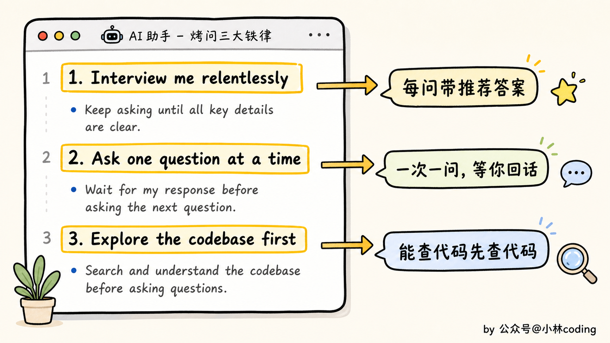
这里其实藏着一个特别值得说的点。你看它才三句话，没有脚本，没有一堆配置，就是几行大白话。可它能干的事，比很多写得老长老长的 skill 还实在。
为什么？因为它没在教 Claude「怎么做」，它在改 Claude「用什么姿态跟你说话」。这三句话，本质是一个开关，啪一下，把人和 AI 的关系整个掉了个个儿。
平时是你提需求、它执行。现在变成它提问、你拍板。
为什么非得「一次只问一个」？
我第一次看到「一次只问一个问题」这条，说实话有点不以为然。不就是省点事嘛，一次多问几个不是更快？
后来我才反应过来，这条恰恰是整个 skill 最聪明的地方。
先讲背后的道理。grill-me 里有个词叫「设计树」（design tree），这不是它发明的，是几十年前一位叫 Fred Brooks 的软件界老前辈提出来的。
意思是说，你做任何一个东西，背后都是一棵决定组成的树。你先做一个大决定，这个大决定又岔出好几个小决定，小决定底下再岔出更小的。
关键就在这个「岔」字上。
真正让你返工返到吐血的，往往不是哪个你认真纠结过的决定，而是某个你压根没意识到自己在选的岔路。你以为那地方没得选，其实那是个岔口，你随手挑了一条，等走到底发现不对，回头一看，从那个岔口往后的活全白干了。
打个装修的比方你就懂了。
你要装修，最上游的决定是「整体什么风格」。定了风格，才轮到墙刷什么颜色、买什么家具。你要是风格还没定，就先跑去挑了一堆家具，回头定了个跟家具八字不合的风格，那家具是不是白买了？
上游的决定不定死，下游全是空中楼阁。 这就是为什么它非要一根枝丫一根枝丫地走，一次只掐一个。它得先把你最上游、最模糊的那个决定钉死，才敢往下问。顺序乱了，问了也白问。
实操：让它审问我的「自动追热点小助手」
光说不练假把式。我拿自己一个真实的念头开刀，让 grill-me 审了一遍。
装它很简单，一行命令：
npx skills@latest add mattpocock/skills
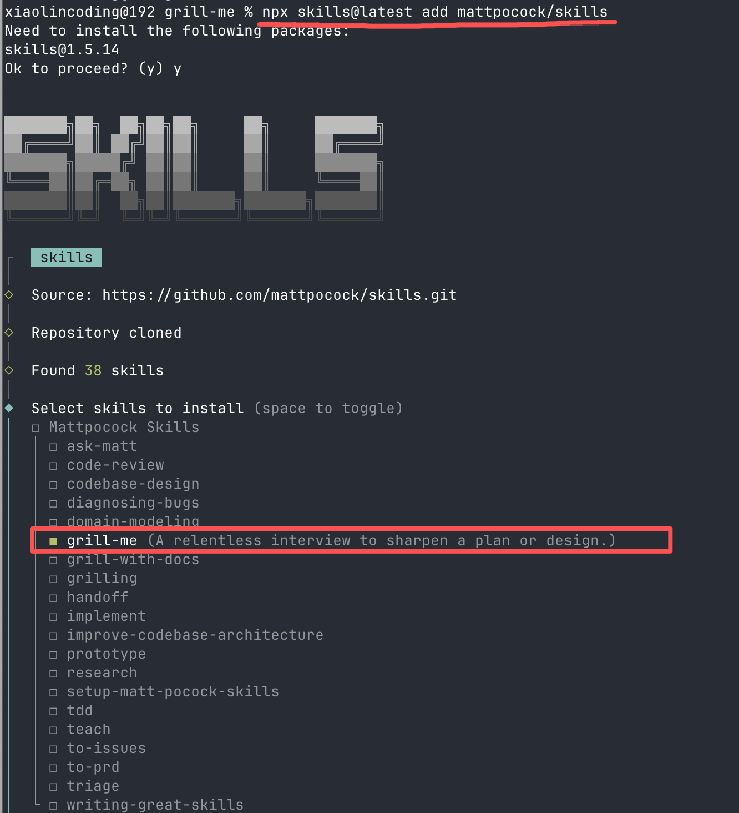
跑完在列表里勾上 grill-me 就装好了。之后在 Claude Code 里敲 /grill-me 就能显示出来了。
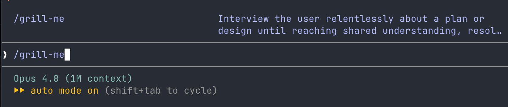
我的念头很朴素，就这么一句，一字没多写，丢给它。
作为一个天天要找选题的 AI 自媒体人，我想做个小助手，每天自动帮我扒各个平台的热点，整理成一份选题清单发给我。
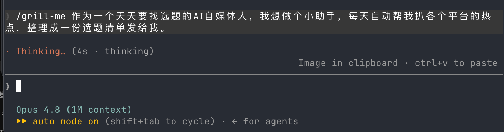
换以前的 Claude，这会儿早开始建项目、写爬虫了。可它一行代码没碰，先去把我 Claude Code 里装过的 skill、mcp 这些工具翻了一遍。
然后跟我说：你手上其实已经有一套现成的积木了。agent-reach 能搜十几个平台，飞书那套能推送，schedule 能定时。所以这个助手很可能不用自己写爬虫，把这些现成能力「编排」起来就行。
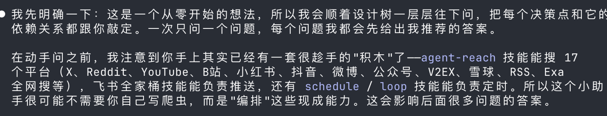
这就是grill-me skill 中三句话里的最后一条，能自己查清楚的先别问我。我这里张口是「做个爬热点的工具」，所以它先是翻完我的家底，摸索清楚之后，直接把这事重新定义了。
接着它开始提问，一次只问一个。第一个问题就问我：我说的「AI」到底算哪种垂类。
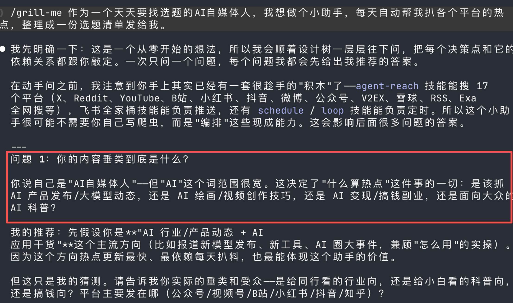
我回：AI 编程实践、大模型动态、Claude Code 这些。
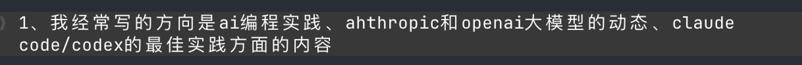
它拿着这个答案往下推了一层：既然是 AI 编程，那热点几乎都在英文源首发，X、HackerNews、GitHub 才是主战场，国内平台对这个垂类基本是慢半拍的二手翻译。
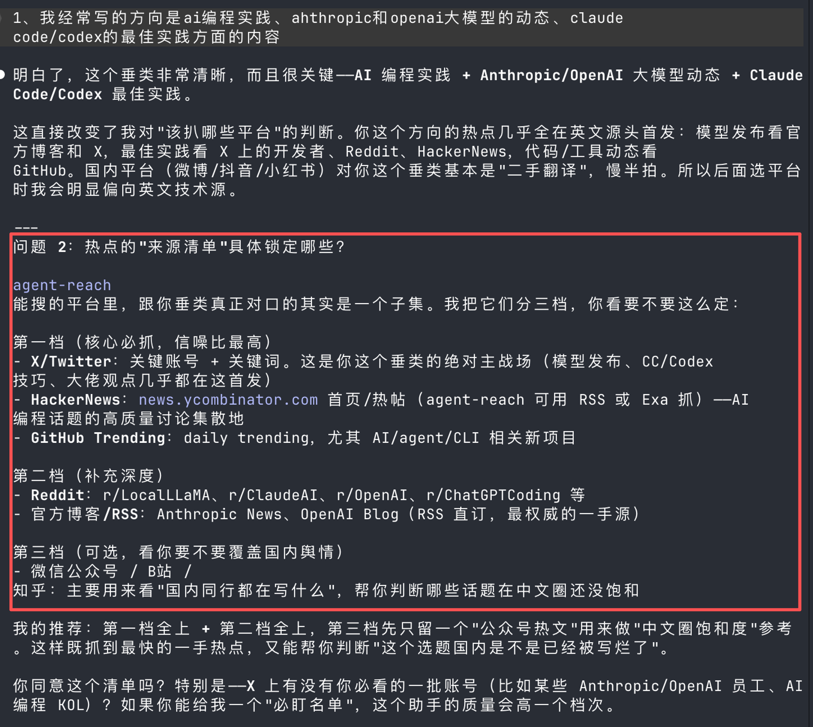
注意这个顺序。它问「扒哪些平台」的时候，答案早被我上一轮「写 AI 编程」框住了。上游先定，下游才有方向。这就是那棵设计树，一根枝丫喂着下一根。
后面它一轮轮往下问，一共问了我 10+ 轮，一天几条、推到哪、几点推这些就不细说了。
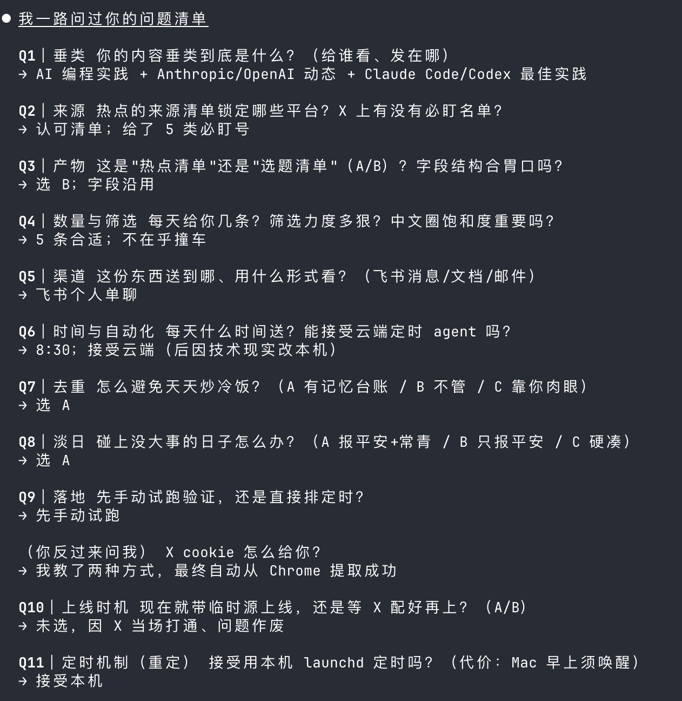
中间有一问我印象最深，它揪出个我自己绝想不到的坑：这助手每天独立起跑、不记得昨天推过啥，那一个热点连挂三天，会不会连推我三天同一个选题。这种事等真发生了才反应过来就晚了，它在写代码前就替我想到了。
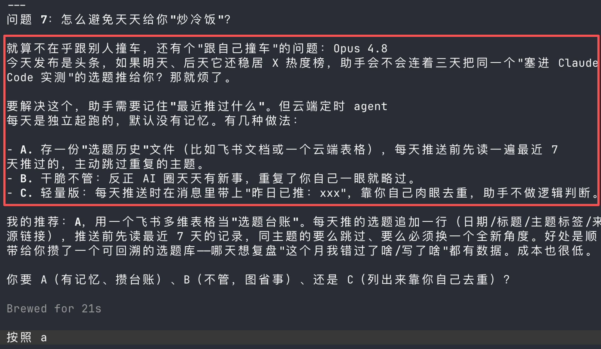
到了第九轮，终于开始跑第一版了。
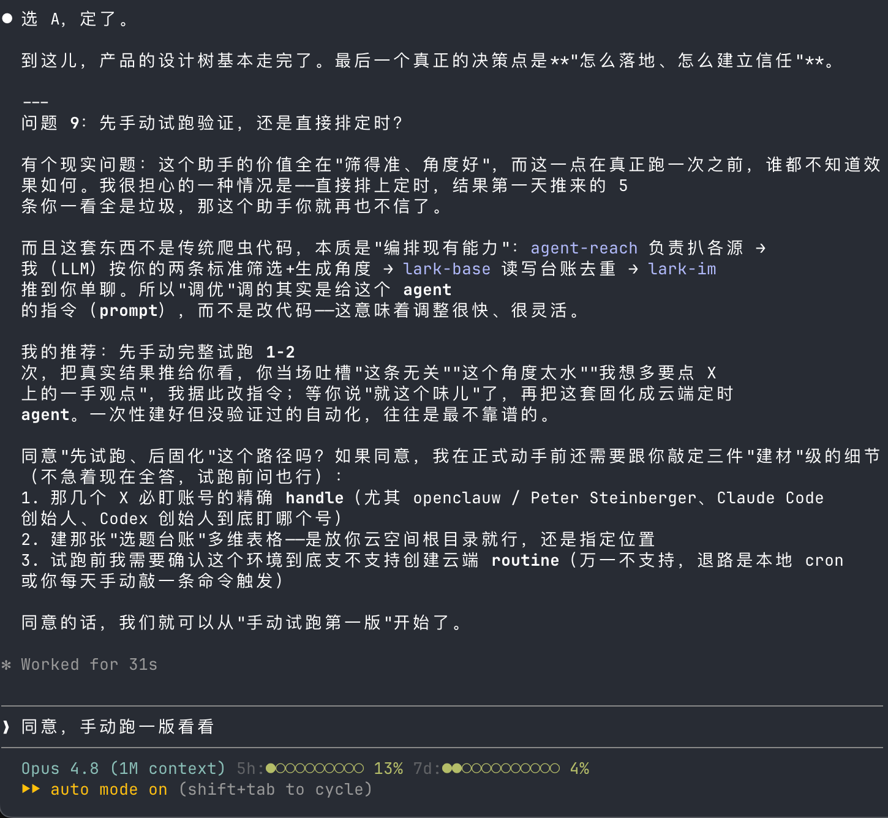
手动跑出来的效果如下，把 AI 圈里值得写的内容梳理了一份给我。
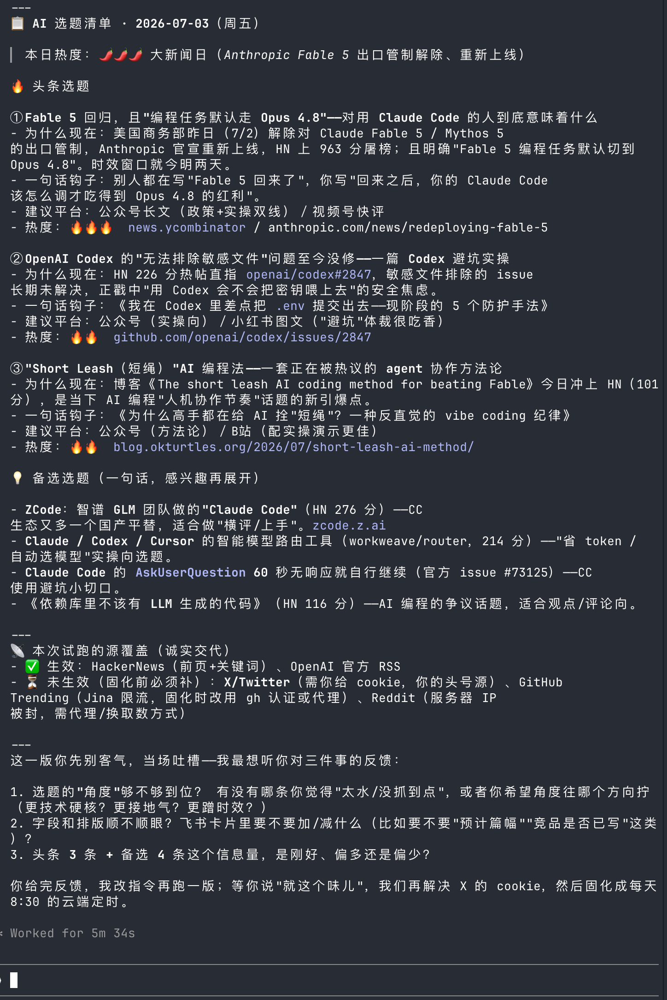
它还跟我确认是不是这个味，我觉得没问题，就开始后续的飞书连通性测试和定时任务设置。
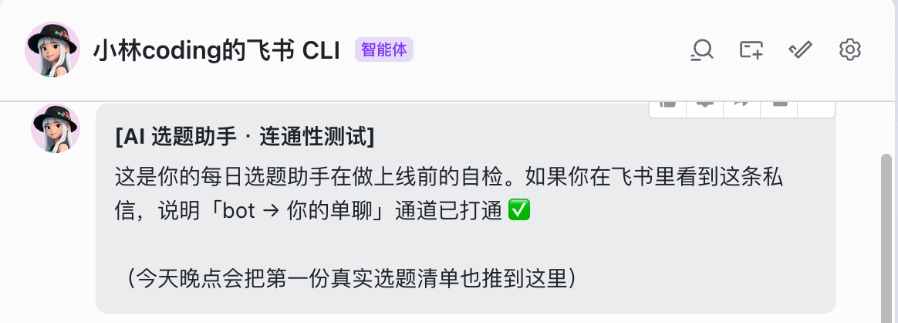
最终的效果，它每天定时去扒 AI 圈值得写的选题，筛选之后推送到我的飞书。
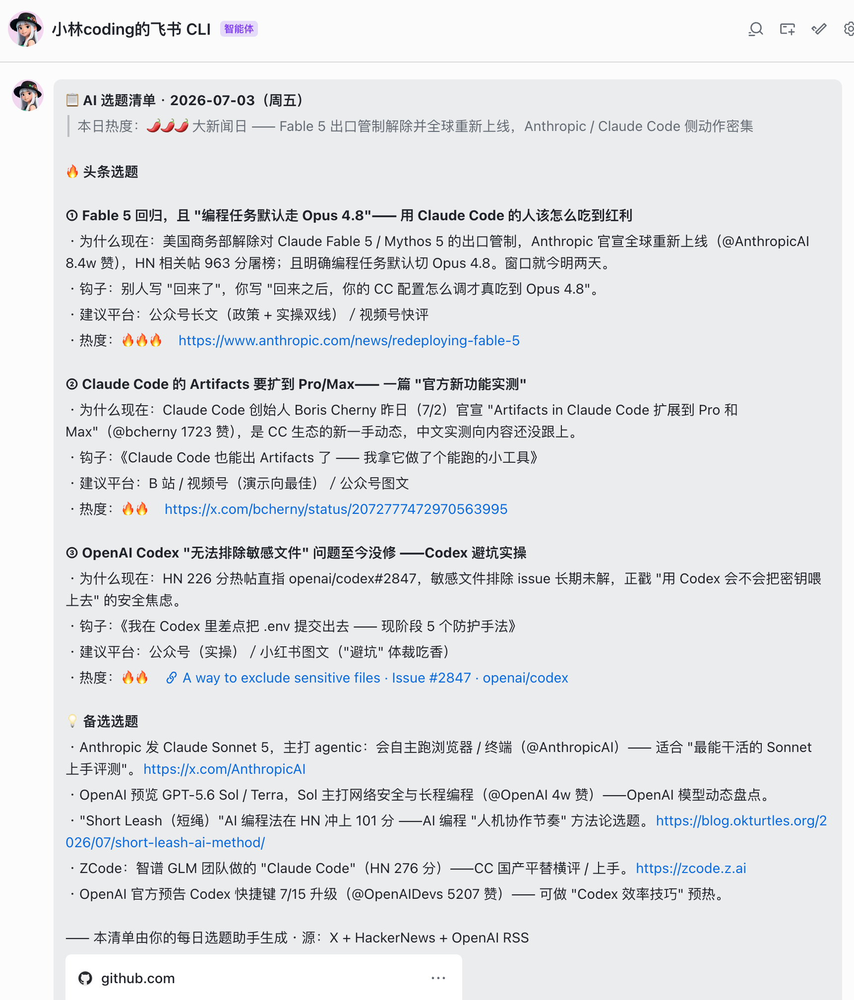
不得不说，grill-me 确实好用，感觉它在疯狂挖掘你的需求，一步一步跟你提问、确认方案。过程看着是繁琐了点，但你要做的其实很轻松，就是从它给的选项里挑一个自己想要的，这么一路点下去就行。
那它跟 Plan Mode 差在哪？
看到这估计有同学要问了：Claude Code 不是自带一个 Plan Mode（计划模式）吗？让它先出个计划再干活，不也一样？
不太一样，差别还挺大。
Plan Mode 的性子是急着交作业。它憋着劲想赶紧给你憋出一份计划来好开工，问你的问题很少，很多拿不准的地方，它自己就替你定了。本质上还是「AI 替你做主」。
grill-me 反过来，它一点都不急着产出东西，它的目标是先跟你想到一块去。所以它才敢一个一个慢慢问，把主动权全塞回你手里，每个决定都逼你自己拍。
说白了，一个图快，一个图你想明白。
所以这俩不冲突，是配合着用的。真要做一件稍微有点分量的事，我现在的顺序是：先 grill-me 把脑子里的糊涂账捋清楚，捋出一份想明白的方案，再进 Plan Mode 让它照着出计划、开干。前面那道审问，就是给后面的猛干上了一道保险。
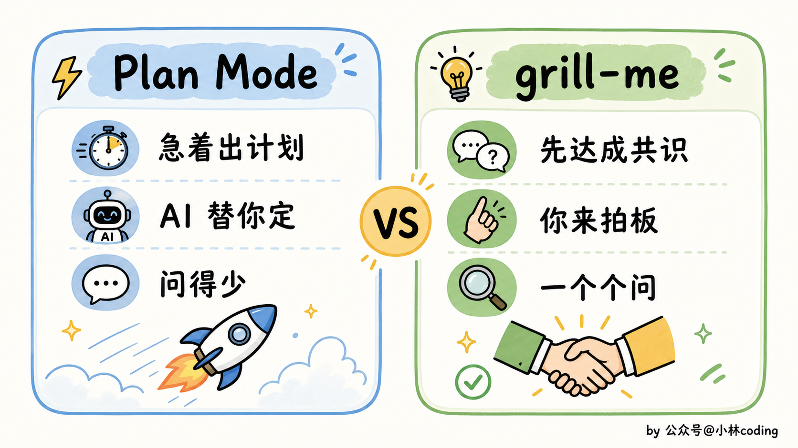
最后
夸了这么多，也得泼盆冷水：grill-me 不是万金油，别啥事都拉来审一遍。
改个错别字、调个颜色、加个一眼能看穿的小功能，你要还召唤它来审问，那它一本正经问你一串，纯属折磨，你会被烦死。
它真正该出场的时候，是那种要花你好几个小时、而且一旦方向定错、返工成本很高的活。写代码之前是最便宜的纠错时机，这时候多聊半小时，比事后重写一天强太多。
对了，它审的也不一定非得是代码。
你有个产品点子、一个还没想透的选题、一份课程大纲，任何背后有「一棵决策树」的东西，都能丢给它审一审。我自己就试过让它审我的选题方向，被问出好几个我原本压根没考虑到的角度。
说到底，grill-me 干的这件事，是把 AI 从一个猜你心思的执行工具，变成一个逼你把心思说清楚的搭档。
它问的每一个问题，其实都是你本该问自己、却又懒得问的。
它只是替你，把这道功课补上了。